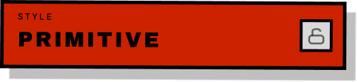
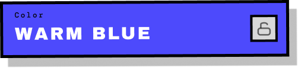
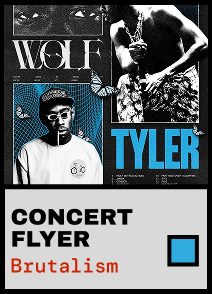
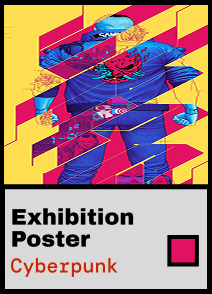
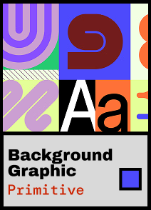
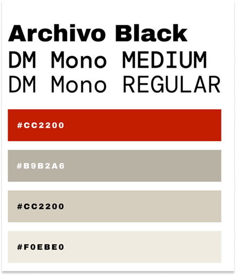
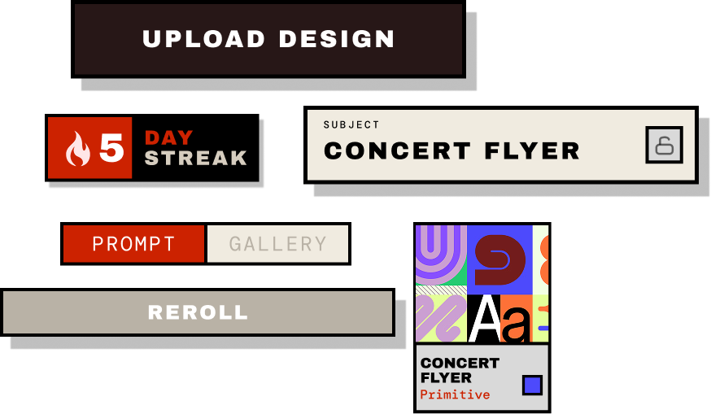

Many Designers who want to grow their skills face two problems: figuring out what to design, and staying consistent with practice. Most people default to redesigning the same comfortable things in the same comfortable style, which doesn't push them.
How REPS solves this:
Reps generates a random combination of subjects, styles, and colors


With a personal gallery that archives every piece alongside the prompt that inspired it



A streak system is a fun non stressful way to reward daily consistency
Process

Design System
I Decided on a design system with a bold but simple Text font. And a bold red primary with softer complimentary collors
Drafting Components
I wanted a casual artistic playgroundy feel. The simple rectangular components with a strict drop shadow give off the "artstic gym" vibe
